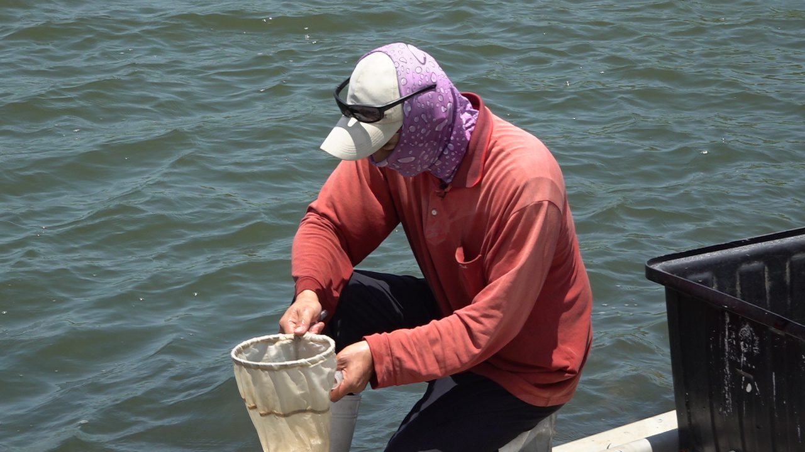

一直以來，氣候變遷帶來的影響始終是人們關注的議題，而過去漁業「看天吃飯」的養殖方式，也讓他們首當其衝地要面對來自大自然的變化。據統計，2025年全國文蛤產量約有4.8萬公噸，略高於2024年的4.7萬公噸，但兩年度皆低於2023年的5.5萬公噸，整體產量仍未回到過去的水準。
而收成不佳的背後，與極端氣候導致的豪大雨以及連續高溫脫不了關係。極端氣候不只改變養殖池的水質，也讓其中生物難以生存，而文蛤便是劇變下的受害者之一。
文蛤作為底棲生物，十分仰賴好的環境。面對越來越難以預測的氣候，文蛤究竟該如何適應？一位年收百萬的養殖好手——李尚銘，選擇使用三種「益生菌」並結合「豆漿」，讓文蛤身強體壯，而擁有這樣的成果，皆是源於他背後的不斷嘗試與摸索，也讓他找出一套不同於傳統的養殖方式。

養好一池水 也養好一池蛤
文蛤所能適應的水中溫度在25度～39度之間，極端氣候導致的暴雨除了影響水的酸鹼度外，高溫也會促使養殖池中的有害微生物大量繁殖，進而影響文蛤成長，甚至因患病而死。而好的「菌」便能有效地穩定水質與土質，讓文蛤得以健康成長。
那麼，李尚銘魚塭中的三種「益生菌」是哪三種？第一種是「光合菌」，它能有效分解水中有機物及有害物質，並抑制病菌增長，減少文蛤患病機率；第二種則是「枯草桿菌」，它能幫助分解水中殘餌，維持良好的底質環境；第三種則是「乳酸菌」，李尚銘將其加進池中，目的就是為了促進文蛤快速生長。
而之所以會利用這麼多的「好菌」，並非只是為了養蛤，李尚銘說「我不是專門在養文蛤的，而是這些環境顧好了，你自然養出來的東西就好，你的存活率就上升」。當有了良好的環境，以及靠「好菌」建立起的防護網，面對劇烈的天氣變化，文蛤也能有足夠的時間去順應周遭變化。
除了加入益生菌改變生存環境，利用「豆漿」養蛤，也是李尚銘養蛤途中的重要發現。文蛤以微藻及水中的有機碎屑為食，過去，漁民一般以魚粉或鰻粉，作為培養水中微藻的養分來源，然而，這樣的方式會消耗大量海洋資源，因此李尚銘開始思考，是否能找到更合適的替代品。最後，他將目光放到了「黃豆」上。他發現黃豆不僅比魚粉來得環保，在價格上也相對低廉，於是他逐漸發展出「豆漿養蛤」的方式。
而在黃豆之前，李尚銘也曾嘗試用芝麻粕作為養殖飼料，但因芝麻殼不好消化，效果並不如預期。所以在經過一次又一次的嘗試與調整後，他選擇將黃豆製成豆漿，摸索出一套屬於自己的養蛤方法。
從接手家業 到走出自己的養殖路
現在對養蛤頗有經驗的李尚銘，其實也歷經過難關。作為返鄉青年，他的父親並不是一開始就同意他回來接手家族事業。在接手家族事業前，李尚銘早已在科技業工作多年，可看見父親因長年從事高強度工作而受傷、生病後，他便辭去工作，回到家鄉。李尚銘提到，父親之所以反對，便是因為覺得科技業更為穩定。
為了讓父親能放心把家業交給自己，他選擇了最難養的一池魚塭，在時間的洗禮下，他一點一點接手不同狀況的魚塭，最後，在回鄉第五年時，父親終於選擇放手讓兒子自己去闖。
從最難養的魚塭，到接手家族事業，再到研究如何養水、養環境，在他的小小實驗室裡，我們能看見他一整面牆的行事曆。不只要凌晨熬煮豆漿，還要跨著無數個養殖池去觀察魚塭狀況，為了養殖，他也從零開始學習如何一個人修理養殖設備，他笑著說：「所以我花很多時間就是在把這些垃圾變成我的資產。」
而對於是否想將所得技術傳授於他人，李尚銘認為，只要有緣，他都願意交換自己的經驗與心得。